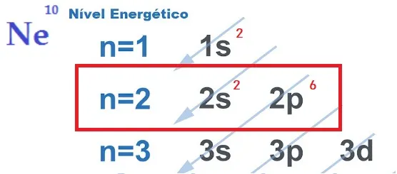

As ligações químicas consistem em interações que os átomos realizam a fim de se estabilizarem eletronicamente.
As ligações químicas são as interações que ocorrem entre átomos para se tornarem uma molécula ou substância básica de um composto. Existem três tipos de ligações: covalentes, metálicas e iônicas. Os átomos buscam, ao realizar uma ligação química, estabilizar-se eletronicamente. Esse processo é explicado pela teoria do octeto, que dita que cada átomo, para alcançar estabilidade, precisa ter em sua camada de valência oito elétrons.
A busca por estabilidade eletrônica, que justifica a realização de ligações
químicas entre
os átomos, é explicada pela teoria do octeto. Proposta por Newton Lewis, essa teoria afirma
que a interação atômica acontece para que cada elemento adquira a estabilidade de um gás
nobre, ou seja, oito elétrons na camada de valência.
Para isso, o elemento doa, recebe ou compartilha elétrons da sua camada
mais externa,
realizando, portanto, ligações químicas de caráter iônico, covalente ou metálico. Os
gases
nobres são os únicos átomos que já possuem oito elétrons na sua camada mais
externa e é por
isso que pouco reagem com outros elementos.
Para obter os oito elétrons na camada de valência como previsto na regra do octeto, os átomos estabelecem ligações entre si, que variam de acordo com a necessidade de doar, receber ou compartilhar elétrons e também com a natureza dos átomos ligantes.
Também conhecidas com ligações eletrovalentes ou heteropolares, acontecem
entre metais e
elementos muito eletronegativos (ametais e hidrogênio). Nesse tipo de ligação, os
metais
tendem a perder elétrons, transformando-se em cátions (íons positivos),
e os ametais e o
hidrogênio ganham elétrons, tornando-se ânions (íons negativos).
Os compostos iônicos são duros e quebradiços, possuem alto ponto de
ebulição e conduzem
corrente elétrica quando estão no estado líquido ou diluídos em água.
Observação: Fique atento ao fato de que o átomo que ganha elétrons vai se
tornar um íon com
sinal negativo e que o átomo que perde elétrons fica com sinal positivo.
Exemplos de substâncias iônicas:
Bicarbonato (HCO3-);
Amônio (NH4+);
Sulfato (SO4-).
As ligações covalentes acontecem pelo compartilhamento de elétrons. Em virtude da baixa diferença de eletronegatividade entres os elementos ligantes, eles não doam ou recebem elétrons, mas compartilham pares eletrônicos para assim ficarem estáveis de acordo com a regra do octeto. Esse tipo de ligação é muito recorrente nos elementos simples, como Cl2, H2, O2, e também nas cadeias carbônicas. A diferença de eletronegatividade entre os ligantes determina se a ligação é polar ou apolar.
Também chamada de ligação covalente coordenada, ligação semipolar, dativa ou coordenada, ela é muito semelhante à ligação covalente, o que difere as duas é que um dos átomos da ligação dativa é responsável por compartilhar dois elétrons. Nesse tipo de ligação, que ocorre artificialmente, a molécula adquire as mesmas características de uma molécula proveniente de uma ligação covalente espontânea.
Esse tipo de ligação acontece entre metais, que englobam os elementos da
família 1A (metais
alcalinos), 2A (metais alcalinoterrosos) e os metais de transição (bloco B da tabela
periódica – grupo 3 ao 12), formando o que chamamos de ligas metálicas. A
característica
diferencial em relação aos demais tipos de ligação é a movimentação dos
elétrons, o que
explica o fato de os materiais metálicos, no estado sólido, serem ótimos condutores
elétricos e térmicos. Além disso, as ligas metálicas possuem alto ponto de fusão e ebulição,
ductilidade, maleabilidade e brilho. São exemplos de ligas metálicas:
- aço: ferro (Fe) e carbono C;
- bronze: cobre (Cu) + estanho (Sn);
- latão: cobre (Cu) + zinco (Zn);
- ouro: ouro (Au) + cobre (Cu) ou prata (Ag).
- Ligações químicas:> interação entre átomos que buscam estabilidade eletrônica.
- Tipos de ligações: iônicas, covalentes e metálicas.
- Regra do octeto: define que, para o átomo ficar estável, ele deve ter em sua camada de
valência oito elétrons.